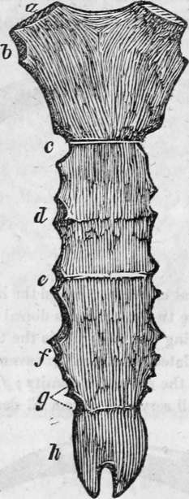
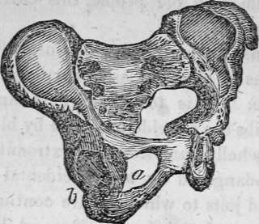
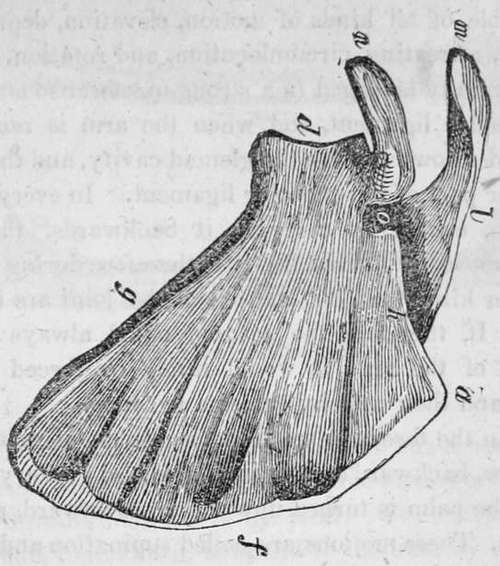

The Human Skeleton. Part 6
Description
This section is from the book "Human Physiology For The Use Of Elementary Schools", by Charles Alfred Lee. Also available from Amazon: Human Physiology, for the Use of Elementary Schools.
The Human Skeleton. Part 6
39. Sternum
Between the forward ends of the ribs, directly in front of the chest, lies the sternum, or breastbone. It is light and spongy, depending chiefly for its strength on the numerous ligaments which cover it. In the child, it is divided into eight pieces by cartilaginous portions, which as life advances, are reduced to three ; and, in old age, are united into one. It terminates below in a sharp pointed cartilage, which lies over the stomach, and may be felt externally. It is somewhat hollowed beneath at its upper end "for the passage of the treachea or wind pipe, which lies directly under it ; and on each side there are seven oval depressions for admitting the cartilaginous extremities of the first seven ribs.
40. The sternum in this cut consists of two bones. The first is broad and thick above, and contracts as it descends. It is convex before and concave behind. At the upper angle a, the collar bone is articulated ; b, the articular surface for the cartilage of the first rib ; b, for second rib ; c, d, e, f, g, mark the articular surfaces of the 3d, 4th, 5th, 6th, and 7th ribs ; h, the ensiform cartilage, terminates the lower extremity of the sternum. In old people, this cartilage is often changed into bone.
41. The manner in which the ribs are attached to the sternum by means of slips of elastic cartilage, is worthy of particular notice. It is to this circumstance that it is owing, that the ribs are so seldom injured by blows and falls ; for if they were wholly bone from one extremity to the other, life would be endangered by any accidental fracture, and even the rubs and jolts to which we are continually exposed, would be too much for their delicate and brittle texture. When we lean forward or to one side, the ribs accommodate themselves not by a change of form in the bones, but by the bending of the cartilages. It is owing to this elasticity that the blows of boxers so seldom succeed in fracturing the ribs ; as they yield in proportion to the violence of the force inflicted. But this is not the case in old age. Then the cartilages of the ribs become bony, and the whole arch unyielding and inelastic ; so that blows which formerly would have caused little or no injury, are now attended with fracture of the rib. The influence of the elastic structure of the ribs,, in the action of breathing, is highly interesting and important, and will be fully explained when we come to- treat of Respiration.
42. The next division of the trunk is called the pelvis or basin, which consists of a circle of large firm bones, situated between the lower portion of the trunk and the inferior extremities. They are the sacrum, the coccyx, the ilium, the ischium, and the pubis. The ilium forms the upper, the ischium the lower, while the pubis is situated at the fore part of the pelvis ; and each one of these bones contributes to form the large and deep socket, for the head of the thigh bone. The pelvis not only affords lodgment for the organs contained within its cavity, but it also sustains the entire weight of the body, and furnishes sockets for the heads of the thigh bones to roll in, and a broad surface for numerous muscles to spring from.
The pelvis.
43. The last division of the body comprehends the upper and lower extremities. The upper consist of the shoulder,, arm, fore arm, and hand. The bones composing the shoulder are two, the clavicle, or collar bone, and the scapula, or the blade bone. The clavicle, named from its resemblance to a hey, resembles the italic s, and extends across the upper part of the chest, from the shoulder to the breast bone, and it serves not only to sustain the upper extremity and connect it with the chest, but also to prevent its falling forward upon the thorax, and to afford a fixed point for steadying the arm in the performance of its various actions.
44. The scapula, or shoulder blade, is a large, flat, triangular bone placed upon the upper and back part of the chest, and extends from the second to the seventh ribs. It lies embedded in muscles, and has no connection with any other bone except the clavicle at a single point. It is separated from the thorax by a double layer of muscles, on which it is placed as on a cushion; It serves for the attachment of sixteen muscles which go to the ribs, the bone of the tongue, the arm, the head, and the spine. It thus serves not only as a support, but a fulcrum for every action of the superior extremity.
Scapula, a, superior angle ; d, the glenoid cavity, or socket for the round head of the arm bone ; m, the aeromion process : n, the coracoid process, which serve to protect the joint; f, the base ; g, the costa, or inferior border, and k, the superior border of the triangle ; l, the spine ; o, the semi lunar notch, for the passage of an artery, vein, and nerve.
45. As a general rule, in the joints, strength and security are sacrificed, in some degree, to obtain great freedom and latitude of motion. Accordingly, we find that the shoulder joint, which allows of more extensive motion than any other, is also more frequently dislocated. In the hinge joints, such as the knee and ankle, such an accident is comparatively rare. Where a bone is dislocated, a regularly educated surgeon should, if possible, always be employed to reduce it, as there is great danger in trusting to a natural bone setter, so called, who is entirely ignorant of the anatomy of the parts.
46. The os humeri, or arm bone, is of a cylindrical shape, and forms at the elbow a perfect hinge joint with the two bones of the fore arm, called radius and ulna. This bone is susceptible of all kinds of motion, elevation, depression, advancing, retreating, circumlocution, and rotation. Its scapular extremity is lodged in a strong membraneous bag, called the capsular ligament, and when the arm is raised up, the bone slides downward in the glenoid cavity, and thus distends the lower part of the capsular ligament. In every motion of the arm, except in carrying it backwards, the scapular readily moves or follows it; it is therefore during motions of the latter kind, that dislocations of the joint are most apt to occur. If, therefore, the scapula could always follow the motions of the arm, it would rarely be forced out of its socket, and then only by extreme violence.
Continue to:
Tags
humans, anatomy, skeleton, bones, physiology, organs, nerves, brain